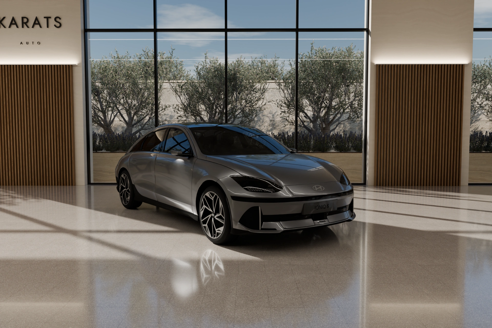

Kilometraje comprobado
Contrastamos el kilometraje con el historial de mantenimiento y los registros de ITV disponibles. Puedes revisar la documentación antes de decidir.
Te enseñamos el historial del coche y revisamos contigo las condiciones de la compra.

Contrastamos el kilometraje con el historial de mantenimiento y los registros de ITV disponibles. Puedes revisar la documentación antes de decidir.
Antes de venir, te enviamos el informe de la subasta con fotografías y los daños registrados. Así puedes revisarlo y preguntarnos por lo que te preocupe.
Al comprar como consumidor, tienes al menos un año de garantía legal para un coche usado. El plazo y las condiciones quedan por escrito. Si aparece una falta de conformidad cubierta, nos ocupamos conforme a la ley.
Al comprarnos un coche no pagas el ITP de las compraventas entre particulares. La venta tributa por IVA, según el régimen aplicable, incluido en el precio final. En Cataluña, el tipo general para un coche comprado a un particular es del 5 %, con reglas y excepciones según el vehículo.
El cambio de titularidad en la DGT está incluido. Nos encargamos del trámite y repasamos contigo el contrato y la documentación antes de firmar.
Escríbenos desde la ficha del coche. Normalmente respondemos en menos de una hora. Te enviaremos el vídeo y el informe, y podrás preguntarnos lo que necesites.
Hablamos español, inglés, ruso y ucraniano. Puedes hacer las preguntas y hablar de la compra en el idioma que prefieras.
Podemos llevarte el coche a cualquier punto de España. Te damos el precio del transporte antes de que decidas. Si no puedes venir, te enseñamos el coche por videollamada.
Contrastem el quilometratge amb l’historial de manteniment i els registres d’ITV disponibles. Pots revisar la documentació abans de decidir.
Abans de venir, t’enviem l’informe de la subhasta amb fotografies i els danys registrats. Així el pots revisar i preguntar-nos pel que et preocupi.
Si compres com a consumidor, tens com a mínim un any de garantia legal per a un cotxe usat. El termini i les condicions queden per escrit. Si apareix una falta de conformitat coberta, ens n’ocupem d’acord amb la llei.
Quan ens compres un cotxe no pagues l’ITP de les compravendes entre particulars. La venda tributa per IVA, segons el règim aplicable, inclòs en el preu final. A Catalunya, el tipus general per a un cotxe comprat a un particular és del 5 %, amb regles i excepcions segons el vehicle.
El canvi de titularitat a la DGT està inclòs. Ens encarreguem del tràmit i repassem amb tu el contracte i la documentació abans de signar.
Escriu-nos des de la fitxa del cotxe. Normalment responem en menys d’una hora. T’enviarem el vídeo i l’informe, i ens podràs preguntar el que necessitis.
Parlem castellà, anglès, rus i ucraïnès. Pots fer les preguntes i parlar de la compra en l’idioma que prefereixis.
Et podem portar el cotxe a qualsevol punt d’Espanya. Et donem el preu del transport abans que decideixis. Si no pots venir, t’ensenyem el cotxe per videotrucada.
We check the mileage against the available service history and ITV inspection records. You can review the documents before you decide.
Before you visit, we send you the auction report with photos and recorded damage. You can read it through and ask us about anything that concerns you.
When buying as a consumer, you have at least one year of statutory warranty for a used car. The term and conditions are set out in writing. If a covered lack of conformity appears, we handle it under the law.
You do not pay the ITP charged on private car sales when you buy from us. The sale is subject to the applicable VAT regime, included in the final price. In Catalonia, the general rate for a car bought from a private seller is 5%, with rules and exceptions depending on the vehicle.
The change of ownership with the DGT is included. We handle the transfer and go through the contract and documents with you before you sign.
Message us from the car’s listing. We usually reply within an hour. We’ll send you the video and report, and answer your questions.
We speak Spanish, English, Russian and Ukrainian. Ask questions and discuss the purchase in whichever language you prefer.
We can deliver the car anywhere in Spain. We’ll quote the transport cost before you decide. If you can’t visit, we can show you the car on a video call.
Сверяем пробег с доступной историей обслуживания и записями техосмотра ITV. Документы можно изучить до покупки.
До встречи пришлём отчёт аукциона с фотографиями и отмеченными повреждениями. Вы сможете спокойно его посмотреть и задать вопросы.
При покупке как потребитель вы получаете минимум год законной гарантии на подержанный автомобиль. Срок и условия фиксируем письменно. Если обнаружится покрываемое гарантией несоответствие, решаем вопрос по закону.
При покупке у нас вы не платите ITP, которым облагаются сделки между частными лицами. Продажа облагается IVA по применимому режиму, налог учтён в итоговой цене. В Каталонии общая ставка при покупке машины у частника составляет 5 %, с правилами и исключениями для отдельных автомобилей.
Смена владельца в DGT включена в стоимость. Оформлением займёмся мы. Перед подписанием вместе разберём договор и документы.
Напишите из карточки автомобиля. Обычно отвечаем в течение часа. Пришлём видео и отчёт по машине, ответим на вопросы.
Говорим на испанском, английском, русском и украинском. Обсуждать покупку можно на том языке, на котором вам удобнее.
Можем привезти автомобиль в любую точку Испании. Стоимость доставки сообщим заранее, до вашего решения. Если приехать не получается, покажем машину по видеосвязи.